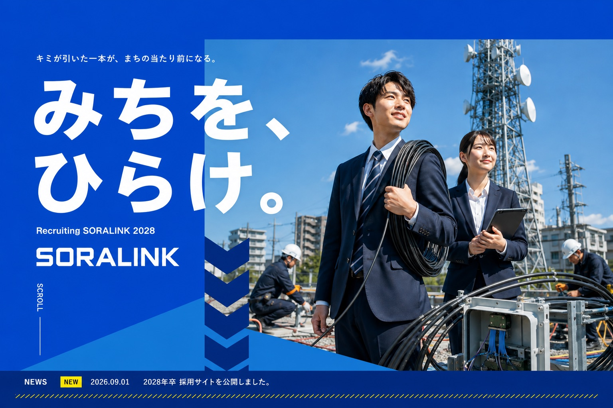
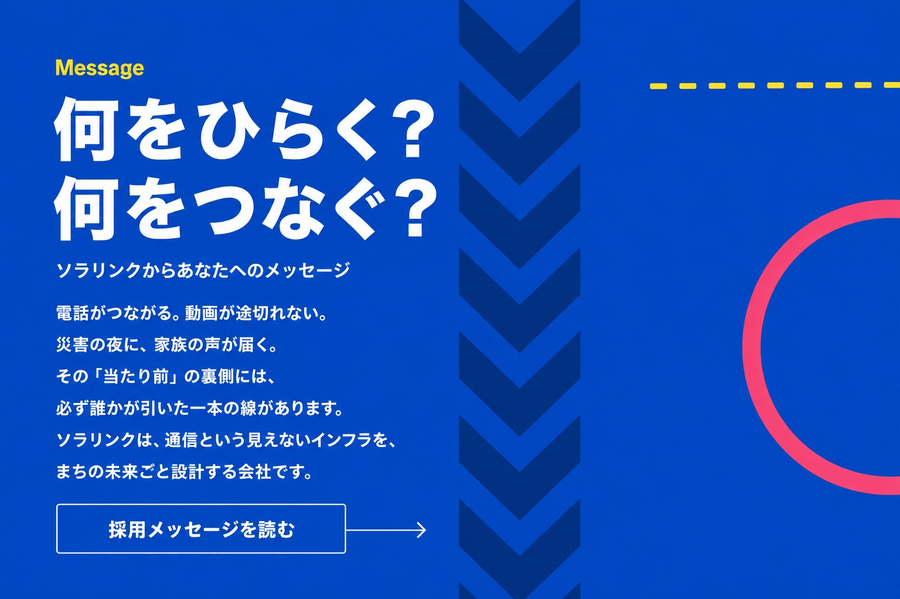
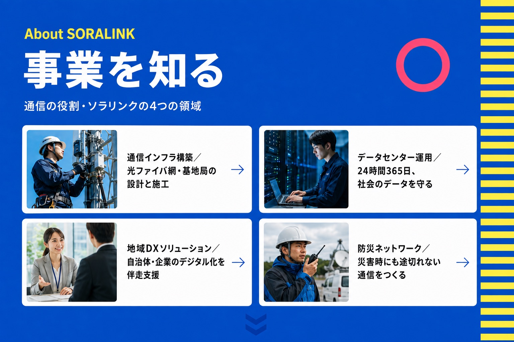
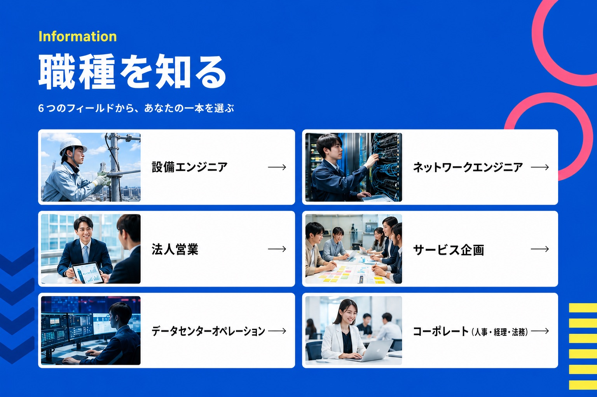
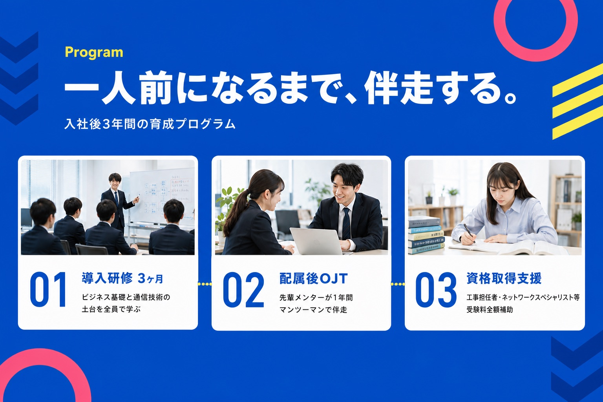
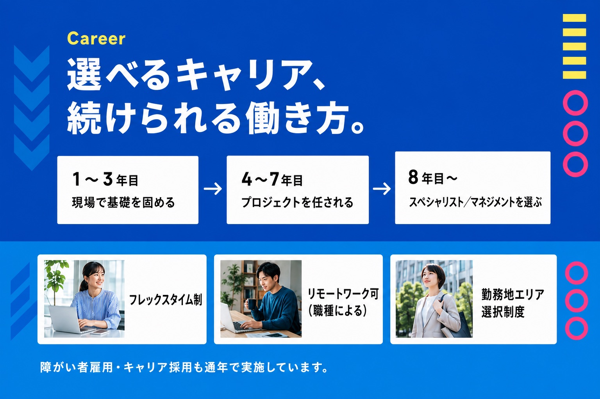
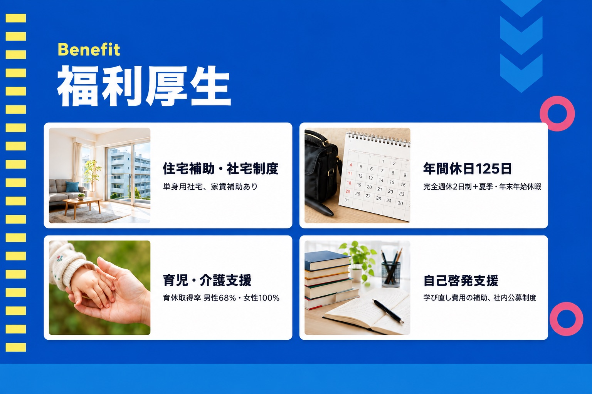
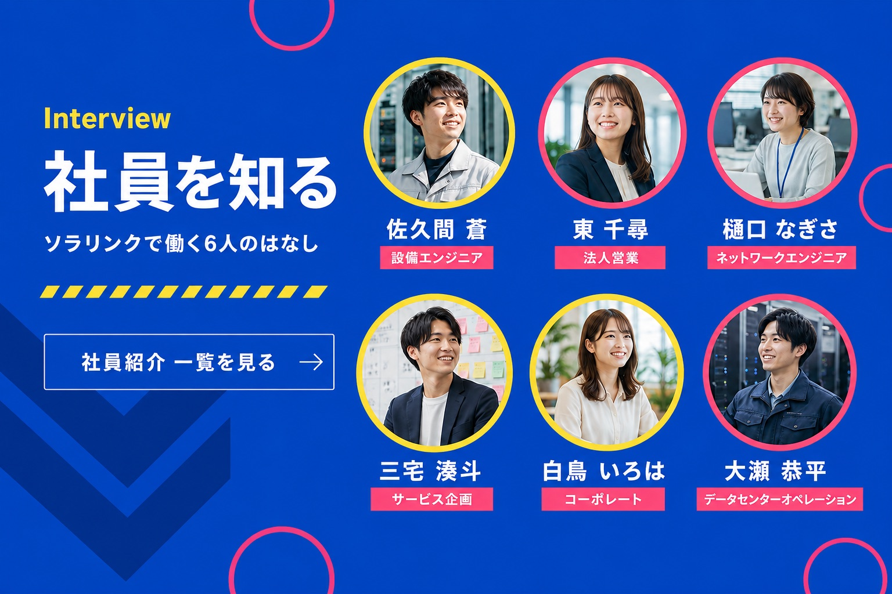
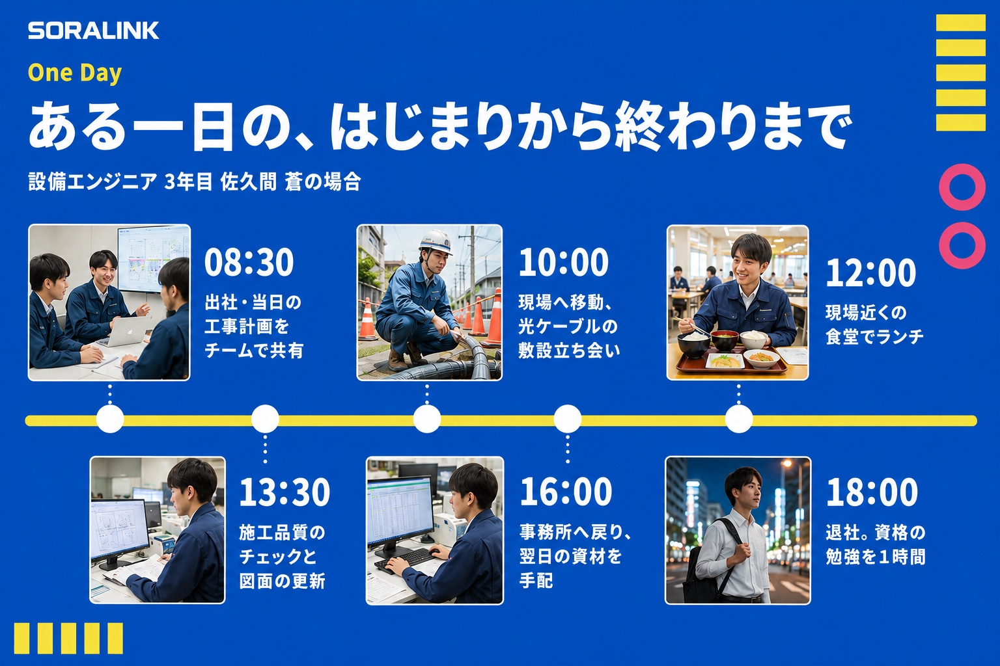
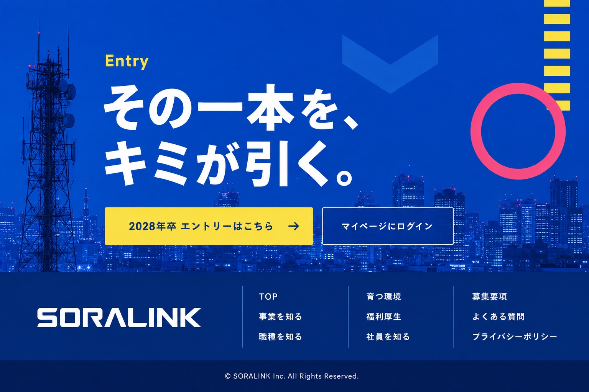

株式会社ソラリンク 2028年卒 新卒採用サイト｜みちを、ひらけ。



Numbers
数字で見るソラリンク
-
0名
従業員数
-
0日
年間休日
-
0%
有給取得率
-
0拠点
全国の拠点数
※ 数値はすべて架空の設定です（2026年9月時点の想定値）。






Flow
選考の流れ
エントリーから内々定まで、およそ3ヶ月です。
STEP 01
エントリー（マイページ登録）
2027年3月〜／登録後、説明会の日程をご案内します。
STEP 02
会社説明会・仕事研究セミナー
2027年3月〜5月／オンラインと対面から選べます。
STEP 03
エントリーシート提出・適性検査
2027年4月〜／自宅から受検できます。
STEP 04
面接（2〜3回）
2027年5月〜／オンライン面接にも対応しています。
STEP 05
内々定
2027年6月以降／入社までフォロー面談を実施します。
FAQ
よくある質問
応募できます。設備・ネットワーク職を含めて文理は問いません。入社後の導入研修で通信技術の基礎から学べる体制を用意しています。
勤務地エリア選択制度があり、応募時に希望エリアを登録できます。配属後も年1回、エリア変更の申請ができます。
参加の有無が合否に影響することはありません。仕事理解を深める場としてご活用ください。
必須ではありません。入社後に工事担任者・ネットワークスペシャリストなどの受験料を全額補助しています。
マイページからお申し込みいただけます。職種や出身学部を指定して、先輩社員をご紹介します。
